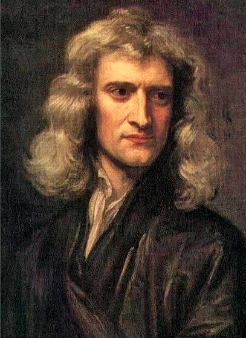

Known for:
Newtonian mechanics
Universal gravitation
Calculus
Newton's laws of motion
Optics
Binomial series
Principia
Newton's method.
Overview about Isaac Newton:

Sir Isaac Newton PRS (25 December 1642 – 20 March 1726/27) was an English mathematician, physicist, astronomer, theologian, and author (described in his own day as a
"natural philosopher") who is widely recognised as one of the most influential scientists of all time and as a key figure in the scientific revolution. His book Philosophiæ Naturalis
Principia Mathematica (Mathematical Principles of Natural Philosophy), first published in 1687, laid the foundations of classical mechanics. Newton also made seminal contributions to
optics, and shares credit with Gottfried Wilhelm Leibniz for developing the infinitesimal calculus. In Principia, Newton formulated the laws of motion and universal gravitation
that formed the dominant scientific viewpoint until it was superseded by the theory of relativity. Newton used his mathematical description of gravity to prove Kepler's laws of
planetary motion, account for tides, the trajectories of comets, the precession of the equinoxes and other phenomena, eradicating doubt about the Solar System's heliocentricity.
He demonstrated that the motion of objects on Earth and celestial bodies could be accounted for by the same principles. Newton's inference that the Earth is an oblate spheroid was
later confirmed by the geodetic measurements of Maupertuis, La Condamine, and others, convincing most European scientists of the superiority of Newtonian mechanics over earlier
systems. Newton built the first practical reflecting telescope and developed a sophisticated theory of colour based on the observation that a prism separates white light into
the colours of the visible spectrum. His work on light was collected in his highly influential book Opticks, published in 1704. He also formulated an empirical law of cooling, made
the first theoretical calculation of the speed of sound, and introduced the notion of a Newtonian fluid. In addition to his work on calculus, as a mathematician Newton contributed to
the study of power series, generalised the binomial theorem to non-integer exponents, developed a method for approximating the roots of a function, and classified most of the cubic
plane curves. Newton was a fellow of Trinity College and the second Lucasian Professor of Mathematics at the University of Cambridge. He was a devout but unorthodox Christian who
privately rejected the doctrine of the Trinity. Unusually for a member of the Cambridge faculty of the day, he refused to take holy orders in the Church of England. Beyond his work
on the mathematical sciences, Newton dedicated much of his time to the study of alchemy and biblical chronology, but most of his work in those areas remained unpublished until long
after his death. Politically and personally tied to the Whig party, Newton served two brief terms as Member of Parliament for the University of Cambridge, in 1689–90 and 1701–02.
He was knighted by Queen Anne in 1705 and spent the last three decades of his life in London, serving as Warden (1696–1700) and Master (1700–1727) of the Royal Mint, as well as
president of the Royal Society (1703–1727).
His Early Life:
Isaac Newton was born (according to the Julian calendar, in use in England at the time) on Christmas Day, 25 December 1642 (NS 4 January 1643) "an hour or two
after midnight", at Woolsthorpe Manor in Woolsthorpe-by-Colsterworth, a hamlet in the county of Lincolnshire. His father, also named Isaac Newton, had died three months before.
Born prematurely, Newton was a small child; his mother Hannah Ayscough reportedly said that he could have fit inside a quart mug.When Newton was three, his mother remarried and
went to live with her new husband, the Reverend Barnabas Smith, leaving her son in the care of his maternal grandmother, Margery Ayscough (née Blythe). Newton disliked his stepfather
and maintained some enmity towards his mother for marrying him, as revealed by this entry in a list of sins committed up to the age of 19: "Threatening my father and mother Smith to
burn them and the house over them."Newton's mother had three children (Mary, Benjamin and Hannah) from her second marriage.From the age of about twelve until he was seventeen,
Newton was educated at The King's School, Grantham, which taught Latin and Greek and probably imparted a significant foundation of mathematics. He was removed from school and
returned to Woolsthorpe-by-Colsterworth by October 1659. His mother, widowed for the second time, attempted to make him a farmer, an occupation he hated. Henry Stokes, master
at The King's School, persuaded his mother to send him back to school. Motivated partly by a desire for revenge against a schoolyard bully, he became the top-ranked student,
distinguishing himself mainly by building sundials and models of windmills.In June 1661, he was admitted to Trinity College, Cambridge, on the recommendation of his uncle
Rev William Ayscough, who had studied there. He started as a subsizar—paying his way by performing valet's duties—until he was awarded a scholarship in 1664, guaranteeing him four
more years until he could get his MA. At that time, the college's teachings were based on those of Aristotle, whom Newton supplemented with modern philosophers such as Descartes,
and astronomers such as Galileo and Thomas Street, through whom he learned of Kepler's work. He set down in his notebook a series of "Quaestiones" about mechanical philosophy as he
found it. In 1665, he discovered the generalised binomial theorem and began to develop a mathematical theory that later became calculus. Soon after Newton had obtained his BA degree
in August 1665, the university temporarily closed as a precaution against the Great Plague. Although he had been undistinguished as a Cambridge student, Newton's private studies
at his home in Woolsthorpe over the subsequent two years saw the development of his theories on calculus, optics, and the law of gravitation.In April 1667, he returned to
Cambridge and in October was elected as a fellow of Trinity. Fellows were required to become ordained priests, although this was not enforced in the restoration years
and an assertion of conformity to the Church of England was sufficient. However, by 1675 the issue could not be avoided and by then his unconventional views stood in the way.
Nevertheless, Newton managed to avoid it by means of special permission from Charles II.His studies had impressed the Lucasian professor Isaac Barrow, who was more anxious
to develop his own religious and administrative potential (he became master of Trinity two years later); in 1669 Newton succeeded him, only one year after receiving his MA. He
was elected a Fellow of the Royal Society (FRS) in 1672.
His Middle Years:
Mathematics
Newton's work has been said "to distinctly advance every branch of mathematics then studied."His work on the subject usually referred to as fluxions or calculus, seen in a
manuscript of October 1666, is now published among Newton's mathematical papers. The author of the manuscript De analysi per aequationes numero terminorum infinitas, sent by
Isaac Barrow to John Collins in June 1669, was identified by Barrow in a letter sent to Collins in August of that year as "[...] of an extraordinary genius and proficiency in these
things."Newton later became involved in a dispute with Leibniz over priority in the development of calculus (the Leibniz–Newton calculus controversy). Most modern historians
believe that Newton and Leibniz developed calculus independently, although with very different mathematical notations. Occasionally it has been suggested that Newton published
almost nothing about it until 1693, and did not give a full account until 1704, while Leibniz began publishing a full account of his methods in 1684. Leibniz's notation and
"differential Method", nowadays recognised as much more convenient notations, were adopted by continental European mathematicians, and after 1820 or so, also by British
mathematicians.[citation needed]Such a suggestion fails to account for the calculus in Book 1 of Newton's Principia itself and in its forerunner manuscripts, such as
De motu corporum in gyrum of 1684; this content has been pointed out by critics[Like whom?] of both Newton's time and modern times.[citation needed]His work extensively uses
calculus in geometric form based on limiting values of the ratios of vanishingly small quantities: in the Principia itself, Newton gave demonstration of this under the name of
"the method of first and last ratios"and explained why he put his expositions in this form,remarking also that "hereby the same thing is performed as by the method of
indivisibles."Because of this, the Principia has been called "a book dense with the theory and application of the infinitesimal calculus" in modern times and in Newton's
time "nearly all of it is of this calculus." His use of methods involving "one or more orders of the infinitesimally small" is present in his De motu corporum in gyrum of
1684and in his papers on motion "during the two decades preceding 1684".
OpticsIn 1666, Newton observed that the spectrum of colours exiting a prism in the position of minimum deviation is oblong, even when the light ray entering the prism is circular,
which is to say, the prism refracts different colours by different angles. This led him to conclude that colour is a property intrinsic to light – a point which had, until
then, been a matter of debate.From 1670 to 1672, Newton lectured on optics.During this period he investigated the refraction of light, demonstrating that the multicoloured
spectrum produced by a prism could be recomposed into white light by a lens and a second prism. Modern scholarship has revealed that Newton's analysis and resynthesis of white
light owes a debt to corpuscular alchemy.He showed that coloured light does not change its properties by separating out a coloured beam and shining it on various objects and
that regardless of whether reflected, scattered, or transmitted, the light remains the same colour. Thus, he observed that colour is the result of objects interacting with
already-coloured light rather than objects generating the colour themselves. This is known as Newton's theory of colour.From this work, he concluded that the lens of any
refracting telescope would suffer from the dispersion of light into colours (chromatic aberration). As a proof of the concept, he constructed a telescope using reflective mirrors
instead of lenses as the objective to bypass that problem. Building the design, the first known functional reflecting telescope, today known as a Newtonian telescope,involved
solving the problem of a suitable mirror material and shaping technique. Newton ground his own mirrors out of a custom composition of highly reflective speculum metal,
using Newton's rings to judge the quality of the optics for his telescopes. In late 1668,he was able to produce this first reflecting telescope. It was about eight inches
long and it gave a clearer and larger image. In 1671, the Royal Society asked for a demonstration of his reflecting telescope. Their interest encouraged him to publish his
notes, Of Colours, which he later expanded into the work Opticks. When Robert Hooke criticised some of Newton's ideas, Newton was so offended that he withdrew from public
debate. Newton and Hooke had brief exchanges in 1679–80, when Hooke, appointed to manage the Royal Society's correspondence, opened up a correspondence intended to elicit
contributions from Newton to Royal Society transactions.
Mechanics and gravitation In 1679, Newton returned to his work on celestial mechanics by considering gravitation and its effect on the orbits of planets with reference to Kepler's laws of planetary motion.
This followed stimulation by a brief exchange of letters in 1679–80 with Hooke, who had been appointed to manage the Royal Society's correspondence, and who opened a correspondence
intended to elicit contributions from Newton to Royal Society transactions.[51] Newton's reawakening interest in astronomical matters received further stimulus by the appearance of
a comet in the winter of 1680–1681, on which he corresponded with John Flamsteed.[59] After the exchanges with Hooke, Newton worked out proof that the elliptical form of planetary
orbits would result from a centripetal force inversely proportional to the square of the radius vector. Newton communicated his results to Edmond Halley and to the Royal Society
in De motu corporum in gyrum, a tract written on about nine sheets which was copied into the Royal Society's Register Book in December 1684.[60] This tract contained the nucleus
that Newton developed and expanded to form the Principia.The Principia was published on 5 July 1687 with encouragement and financial help from Edmond Halley. In this work,
Newton stated the three universal laws of motion. Together, these laws describe the relationship between any object, the forces acting upon it and the resulting motion, laying
the foundation for classical mechanics. They contributed to many advances during the Industrial Revolution which soon followed and were not improved upon for more than 200 years.
Many of these advancements continue to be the underpinnings of non-relativistic technologies in the modern world. He used the Latin word gravitas (weight) for the effect that would
become known as gravity, and defined the law of universal gravitation.In the same work, Newton presented a calculus-like method of geometrical analysis using 'first and last
ratios', gave the first analytical determination (based on Boyle's law) of the speed of sound in air, inferred the oblateness of Earth's spheroidal figure, accounted for the precession
of the equinoxes as a result of the Moon's gravitational attraction on the Earth's oblateness, initiated the gravitational study of the irregularities in the motion of the Moon, provided
a theory for the determination of the orbits of comets, and much more.